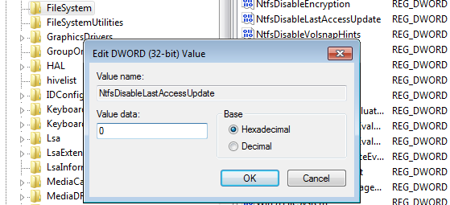
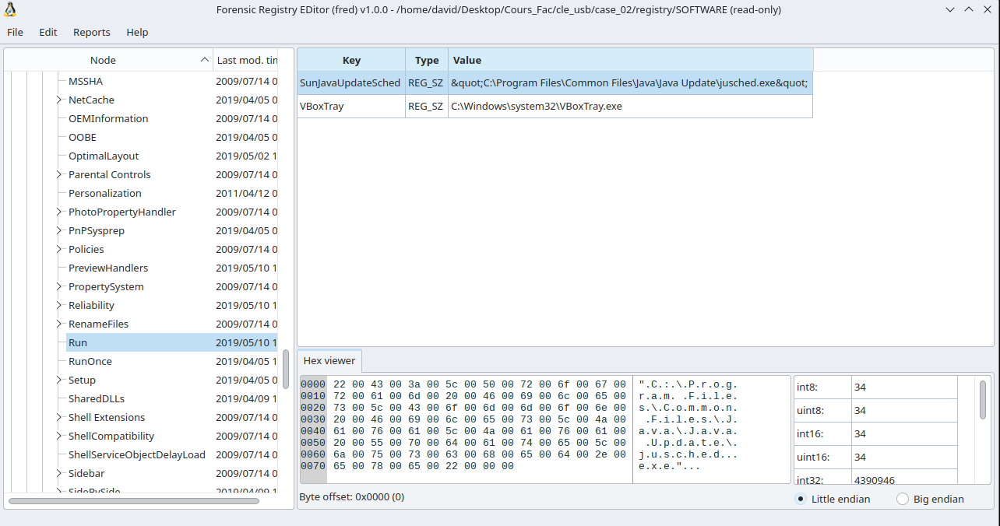

Forensic Introduction
Overview
1. Introduction - (Course 1)2. Understand disk - (Course 1)3. Imaging / Cloning and Mounting - (Course 1)- File system analysis - (Course 2)
- NTFS - (Course 2)
- File System Time Line - (Course 2)
- Carving and String Search - (Course 2)
- Windows Registry - (Course 2)
- Windows Event Logs - (Course 2)
- Other Windows Artifacts - (Course 2)
- Introduction to Flowintel - (Course 3)
- The Exercise - (Course 3)
4. File System Analysis
4.1 Organizing data in files
- Organizing data on a volume
- Maintain file related meta data
- Maintain allocation status of clusters
Metadata Content
---------------------------------- ----------------------------------
1 | | | | 5001
| | | | 5002
| | | | 5003
| | | | 5004
| | | | 5005
|--------------------------------| | | 5006
2 | | | | ...
| | | | ...
| | | | ...
| | | | ...
| | | | ...
---------------------------------- | | ...
3 | | | | ...
| ..... | | | 5014
---------------------------------- ----------------------------------
| | | | |
0 8 16 24 31
Allocation table:4.1 Organizing data in files
- Organizing data on a volume
- Maintain file related meta data
- Maintain allocation status of clusters
Metadata Content
---------------------------------- ----------------------------------
1 | | |11111111111111111111111111111111| 5001
| | |11111111111111111111111111111111| 5002
| | |1111 | 5003
| | | | 5004
| | | | 5005
|--------------------------------| | | 5006
2 | | | | ...
| | | | ...
| | | | ...
| | | | ...
| | | | ...
---------------------------------- | | ...
3 | | | | ...
| ..... | | | 5014
---------------------------------- ----------------------------------
| | | | |
0 8 16 24 31
Allocation table:4.1 Organizing data in files
- Organizing data on a volume
- Maintain file related meta data
- Maintain allocation status of clusters
Metadata Content
---------------------------------- ----------------------------------
1 | Filename: file01.txt | |11111111111111111111111111111111| 5001
| Time stamps: MACB | |11111111111111111111111111111111| 5002
| Rights: Owner, Group, All | |1111 | 5003
| Size: 68 Byte | | | 5004
| Clusters: 5001,5002,5003 | | | 5005
|--------------------------------| | | 5006
2 | | | | ...
| | | | ...
| | | | ...
| | | | ...
| | | | ...
---------------------------------- | | ...
3 | | | | ...
| ..... | | | 5014
---------------------------------- ----------------------------------
| | | | |
0 8 16 24 31
Allocation table: 5001, 5002, 50034.1 Organizing data in files
- Organizing data on a volume
- Maintain file related meta data
- Maintain allocation status of clusters
Metadata Content
---------------------------------- ----------------------------------
1 | Filename: file01.txt | |11111111111111111111111111111111| 5001
| Time stamps: MACB | |11111111111111111111111111111111| 5002
| Rights: Owner, Group, All | |1111 | 5003
| Size: 68 Byte | |22222222222222222222222222222222| 5004
| Clusters: 5001,5002,5003 | |22222222222222222222222 | 5005
|--------------------------------| | | 5006
2 | Filename: file02.txt | | | ...
| Time stamps: MACB | | | ...
| Rights: Owner, Group, All | | | ...
| Size: 55 Byte | | | ...
| Clusters: 5004, 5005 | | | ...
---------------------------------- | | ...
3 | | | | ...
| ..... | | | 5014
---------------------------------- ----------------------------------
| | | | |
0 8 16 24 31
Allocation table: 5001, 5002, 5003, 5004, 50054.2 Deleting a file
- Organizing data on a volume
- Maintain file related meta data
- Maintain allocation status of clusters
Metadata Content
---------------------------------- ----------------------------------
1 | Filename: file01.txt | |11111111111111111111111111111111| 5001
| Time stamps: MACB | |11111111111111111111111111111111| 5002
| Rights: Owner, Group, All | |1111 | 5003
| Size: 68 Byte | |22222222222222222222222222222222| 5004
| Clusters: 5001,5002,5003 | |22222222222222222222222 | 5005
|--------------------------------| | | 5006
2 | Filename: file02.txt (deleted) | | | ...
| Time stamps: MACB | | | ...
| Rights: Owner, Group, All | | | ...
| Size: 55 Byte | | | ...
| Clusters: 5004, 5005 | | | ...
---------------------------------- | | ...
3 | | | | ...
| ..... | | | 5014
---------------------------------- ----------------------------------
| | | | |
0 8 16 24 31
Allocation table: 5001, 5002, 50034.3 Slack space - FileSlack
- Metadata: Case 1: Re-Use Metadata
- Content: End of sector: Filled with zeros (RAM slack)
- Content: End of cluter: Don't touch (File slack)
Metadata Content
---------------------------------- ----------------------------------
1 | Filename: file01.txt | |11111111111111111111111111111111| 5001
| Time stamps: MACB | |11111111111111111111111111111111| 5002
| Rights: Owner, Group, All | |1111 | 5003
| Size: 68 Byte | |3333333333 2222222222222222| 5004
| Clusters: 5001,5002,5003 | |22222222222222222222222 | 5005
|--------------------------------| | | 5006
2 | Filename: file03.txt | | | ...
| Time stamps: MACB | | | ...
| Rights: Owner, Group, All | | | ...
| Size: 10 Byte | | | ...
| Clusters: 5004 | | | ...
---------------------------------- | | ...
3 | | | | ...
| ..... | | | 5014
---------------------------------- ----------------------------------
| | | | |
0 8 16 24 31
Allocation table: 5001, 5002, 5003, 50044.3 Slack space - FileSlack
- Metadata: Case 2: New Metadata
- Content: End of sector: Filled with zeros (RAM slack)
- Content: End of cluter: Don't touch (File slack)
Metadata Content
---------------------------------- ----------------------------------
1 | Filename: file01.txt | |11111111111111111111111111111111| 5001
| Time stamps: MACB | |11111111111111111111111111111111| 5002
| Rights: Owner, Group, All | |1111 | 5003
| Size: 68 Byte | |3333333333 2222222222222222| 5004
| Clusters: 5001,5002,5003 | |22222222222222222222222 | 5005
|--------------------------------| | | 5006
2 | Filename: file02.txt (deleted) | | | ...
| Time stamps: MACB | | | ...
| Rights: Owner, Group, All | | | ...
| Size: 55 Byte | | | ...
| Clusters: 5004, 5005 | | | ...
---------------------------------- | | ...
3 | Filename: file03.txt | | | ...
| Time stamps: MACB | | | 5014
| Rights: Owner, Group, All | ----------------------------------
| Size: 10 Byte | | | | | |
| Clusters: 5004 | 0 8 16 24 31
----------------------------------
Allocation table: 5001, 5002, 5003, 50044.4 Data Recovery
# Recover sectors
# Read from disk and write into a file
dd if=deleted.raw of=file02.txt bs=32 skip=5003 count=2
Metadata Content
---------------------------------- ----------------------------------
1 | Filename: file01.txt | |11111111111111111111111111111111| 5001
| Time stamps: MACB | |11111111111111111111111111111111| 5002
| Rights: Owner, Group, All | |1111 | 5003
| Size: 68 Byte | |3333333333 2222222222222222| 5004
| Clusters: 5001,5002,5003 | |22222222222222222222222 | 5005
|--------------------------------| | | 5006
2 | Filename: file02.txt (deleted) | | | ...
| Time stamps: MACB | | | ...
| Rights: Owner, Group, All | | | ...
| Size: 55 Byte | | | ...
| Clusters: 5004, 5005 | | | ...
---------------------------------- | | ...
3 | Filename: file03.txt | | | ...
| Time stamps: MACB | | | 5014
| Rights: Owner, Group, All | ----------------------------------
| Size: 10 Byte | | | | | |
| Clusters: 5004 | 0 8 16 24 31
----------------------------------
Allocation table: 5001, 5002, 5003, 50044.4 Data Recovery
# Recover exisiting (deleted) file
# Based on metadata
icat deleted.raw 3 > file03.txt
Metadata Content
---------------------------------- ----------------------------------
1 | Filename: file01.txt | |11111111111111111111111111111111| 5001
| Time stamps: MACB | |11111111111111111111111111111111| 5002
| Rights: Owner, Group, All | |1111 | 5003
| Size: 68 Byte | |3333333333 2222222222222222| 5004
| Clusters: 5001,5002,5003 | |22222222222222222222222 | 5005
|--------------------------------| | | 5006
2 | Filename: file02.txt (deleted) | | | ...
| Time stamps: MACB | | | ...
| Rights: Owner, Group, All | | | ...
| Size: 55 Byte | | | ...
| Clusters: 5004, 5005 | | | ...
---------------------------------- | | ...
3 | Filename: file03.txt (deleted) | | | ...
| Time stamps: MACB | | | 5014
| Rights: Owner, Group, All | ----------------------------------
| Size: 10 Byte | | | | | |
| Clusters: 5004 | 0 8 16 24 31
----------------------------------
Allocation table: 5001, 5002, 50034.4 Data Recovery
# Recover overwritten file
# Based on metadata
icat deleted.raw 2 > file02.txt
Metadata Content
---------------------------------- ----------------------------------
1 | Filename: file01.txt | |11111111111111111111111111111111| 5001
| Time stamps: MACB | |11111111111111111111111111111111| 5002
| Rights: Owner, Group, All | |1111 | 5003
| Size: 68 Byte | |3333333333 2222222222222222| 5004
| Clusters: 5001,5002,5003 | |22222222222222222222222 | 5005
|--------------------------------| | | 5006
2 | Filename: file02.txt (deleted) | | | ...
| Time stamps: MACB | | | ...
| Rights: Owner, Group, All | | | ...
| Size: 55 Byte | | | ...
| Clusters: 5004, 5005 | | | ...
---------------------------------- | | ...
3 | Filename: file03.txt (deleted) | | | ...
| Time stamps: MACB | | | 5014
| Rights: Owner, Group, All | ----------------------------------
| Size: 10 Byte | | | | | |
| Clusters: 5004 | 0 8 16 24 31
----------------------------------
Allocation table: 5001, 5002, 50034.5 The Sleuth Kit
mmstat # Volume system information
mmls # List partition table
mmcat # Cat a partition
fsstat # File system information
fls # List files and directories
fcat # Cat a file
ffind # Find filename of an inode
istat # Inode information
ils # List inodes
icat # Cat an inode
ifind # Find inode of a sector
blkstat # Information of a data unit
blkls # Output data units
blkcat # Cat a data unit
jls # List content of journal
jcat # Cat a block from journal
mactime # File system time line
srch_strings # Display printable characters
hfind # Hash database lookup
....4.5 The Sleuth Kit: Exercise
Recover deleted files from /carving/deleted.dd
# File system information
$
# List files
$
# Recover files based on inode numbers
$
$
$ 4.5 The Sleuth Kit: Exercise
Recover deleted files from /carving/deleted.dd
# File system information
$ fsstat deleted.dd
FILE SYSTEM INFORMATION
--------------------------------------------
File System Type: NTFS
Volume Serial Number: 4978FE7D06B65661
OEM Name: NTFS
Version: Windows XP
CONTENT INFORMATION
--------------------------------------------
Sector Size: 512
Cluster Size: 4096
# List files
$
# Recover files based on inode numbers
$
$
$ 4.5 The Sleuth Kit: Exercise
Recover deleted files from /carving/deleted.dd
# File system information
$ fsstat deleted.dd
FILE SYSTEM INFORMATION
--------------------------------------------
File System Type: NTFS
Volume Serial Number: 4978FE7D06B65661
OEM Name: NTFS
Version: Windows XP
CONTENT INFORMATION
--------------------------------------------
Sector Size: 512
Cluster Size: 4096
# List files
$ fls -r deleted.dd
.....
+ -/r * 70-128-2: aware.jpg
+ -/r * 71-128-2: cases.jpg
+ -/r * 72-128-2: circl.png
.....
# Recover files based on inode numbers
$
$
$ 4.5 The Sleuth Kit: Exercise
Recover deleted files from /carving/deleted.dd
{kind=link}
5. NTFS
5.1 File system structure
- NTFS - New Technology File System
- Everything is a file
{kind=link}
5.2 Volume Boot Record
00000000: eb52 904e 5446 5320 2020 2000 0208 0000 .R.NTFS .....
00000010: 0000 0000 00f8 0000 0000 0000 0000 0000 ................
00000020: 0000 0000 8000 8000 fff7 0300 0000 0000 ................
00000030: 0400 0000 0000 0000 7f3f 0000 0000 0000 .........?......
00000040: f600 0000 0100 0000 f92d c409 2fce 776f .........-../.wo
00000050: 0000 0000 0e1f be71 7cac 22c0 740b 56b4 .......q|.".t.V.
00000060: 0ebb 0700 cd10 5eeb f032 e4cd 16cd 19eb ......^..2......
00000070: fe54 6869 7320 6973 206e 6f74 2061 2062 .This is not a b
00000080: 6f6f 7461 626c 6520 6469 736b 2e20 506c ootable disk. Pl
00000090: 6561 7365 2069 6e73 6572 7420 6120 626f ease insert a bo
000000a0: 6f74 6162 6c65 2066 6c6f 7070 7920 616e otable floppy an
.....
000001e0: 0000 0000 0000 0000 0000 0000 0000 0000 ................
000001f0: 0000 0000 0000 0000 0000 0000 0000 55aa ..............U.
Offset: Length: Content: Description:
-------------------------------------------------------------------
0000 3 JMP 52 Jump to bootcode at 54h
0003 8 NTFS OEM ID
----- 000B 2 00 02 Bytes per sector
BIOS 000D 1 08 Sectors per cluster
P.M. 0028 8 fff7 0300 262135 sectors in total
Block 0030 8 04 MFT start cluster
----- 0040 1 f6 Size of MFT records: 10 --> 2^10 = 1.024
0054 426 Bootstrap code
01FE 2 55 AA End of sector signature5.3 Master File Table
- MFT maintain 1 record per file/directory
- Size: 1024 Bytes per record
- In NTFS everything is a file
- Incl. meta files like $MFT
- Structure:
Header Attributes End Empty Error
----------- ---------- ------------------------ --------------
|FILE | | FF FF FF FF | | |
----------- ---------- ------------------------ --------------
0 55 56 ~450 1023
Record Header:
Signature: FILE
Link Count: File is listed in x directories
Is this a file or a directory
Size of the file
Deleted: Is the file already deleted
Attributes: $STANDARD_INFORMATION; $FILE_NAME; $Data
End of Recort: FF FF FF FF
Empty (Resident Data)
Error Check Sequence5.3 MFT
$ istat -o 2048 ntfs.raw 73 | less
$STANDARD_INFORMATION Attribute Values:
Flags: Archive
Owner ID: 0
Security ID: 0 ()
Created: 2019-12-02 16:25:22.099440400 (CET)
File Modified: 2019-12-09 16:09:46.183651100 (CET)
MFT Modified: 2019-12-09 16:09:46.183651100 (CET)
Accessed: 2019-12-02 16:25:22.099440400 (CET)
$FILE_NAME Attribute Values:
Flags: Archive
Name: small_text_file.txt
Parent MFT Entry: 5 Sequence: 5
Allocated Size: 16384 Actual Size: 0
Created: 2019-12-02 16:25:22.099440400 (CET)
File Modified: 2019-12-02 16:25:22.099440400 (CET)
MFT Modified: 2019-12-02 16:25:22.099440400 (CET)
Accessed: 2019-12-02 16:25:22.099440400 (CET)
Attributes:
Type: $STANDARD_INFORMATION (16-0) Name: N/A Resident size: 48
Type: $FILE_NAME (48-3) Name: N/A Resident size: 104
Type: $SECURITY_DESCRIPTOR (80-1) Name: N/A Resident size: 80
Type: $DATA (128-2) Name: N/A Non-Resident size: 15000 init_size: 15000
4169 4170 4171 41725.4 Deleting a file: What will change?
Before delete:
==============
MFT record:
-----------
00000000: 4649 4c45 3000 0300 0000 0000 0000 0000 FILE0...........
00000010: 0100 0100 3800 0100 b801 0000 0004 0000 ....8...........
00000020: 0000 0000 0000 0000 0400 0000 4900 0000 ............I...
00000030: 1300 0000 0000 0000 1000 0000 4800 0000 ............H...
00000040: 0000 0000 0000 0000 3000 0000 1800 0000 ........0.......
.....
000003f0: 0000 0000 0000 0000 0000 0000 0000 1300 ................
offset: size: value: description:
----------------------------------------------------------------------
0010 2 1 Record sequence number
0012 2 1 Link count
0016 2 1 Record flag: 0000 = file deleted
0100 = file in use
0200 = dir deleted
0300 = dir in use
0030 2 1100 FixUp values
03fe 2 1300 CRC5.4 Deleting a file: What will change?
After delete:
=============
MFT record:
-----------
00000000: 4649 4c45 3000 0300 0000 0000 0000 0000 FILE0...........
00000010: -0200- -0000- 3800 -0000- b801 0000 0004 0000 ....8...........
00000020: 0000 0000 0000 0000 0400 0000 4900 0000 ............I...
00000030: -1400- 0000 0000 0000 1000 0000 4800 0000 ............H...
00000040: 0000 0000 0000 0000 3000 0000 1800 0000 ........0.......
.....
000003f0: 0000 0000 0000 0000 0000 0000 0000 -1400- ................
offset: size: value: description:
----------------------------------------------------------------------
0010 2 2 Record sequence number
0012 2 0 Link count
0016 2 0 Record flag: 0000 = file deleted
0100 = file in use
0200 = dir deleted
0300 = dir in use
0030 2 1400 FixUp values
03fe 2 1400 CRC6. File System Time Line
6.1 Time stamps: Nomenclature
- FAT
- MAC times
- M time: Content last Modified
- A time: Content last Accessed
- C time: File Created
- MAC times
- NTFS
- MACE times
- M time: Content last Modified
- A time: Content last Accessed
- C time: File Created
- E time: MFT Entry last mofidied
- MACB times
- M time: Content last Modified
- A time: Content last Accessed
- C time: MFT record last Changed
- B time: File created (Born)
- MACE times
6.2 Last Access Time
- Updated in memory, writen to disk after \(\approx\) 1h
- As of Win Vista
- Not updated per default
- HKEY LOCAL MACHINE/SYSTEM/CurrentControlSet/Control/ /FileSystem/NtfsDisableLastAccessUpdate
- 
- Performance reasons
- Good for file server
- Still updated some times
- File new created
- File copied
- File moved
- Not updated per default
6.3 Time Line: Exercise
Reproduce file system activities
--------------------------------
Thu Jun 27 2013 12:23:08 113 ...b 35-128-1 c:/01.txt
Thu Jun 27 2013 12:24:20 75 m.cb 37-128-1 c:/02.txt
Thu Jun 27 2013 12:25:24 75 m.cb 38-128-1 c:/03.txt
75 m... 41-128-1 c:/03-copy.txt
Thu Jun 27 2013 12:26:05 75 m..b 39-128-1 c:/44.txt
Thu Jun 27 2013 12:27:00 75 macb 40-128-1 c:/05.txt (deleted)
Thu Jun 27 2013 12:33:50 113 m.c. 35-128-1 c:/01.txt
Thu Jun 27 2013 13:07:52 75 .acb 41-128-1 c:/03-copy.txt
Thu Jun 27 2013 13:10:36 75 ..c. 39-128-1 c:/44.txt
Thu Jun 27 2013 13:14:20 20 m... 42-128-1 c:/06.txt
Thu Jun 27 2013 13:56:30 20 .acb 42-128-1 c:/06.txt6.3 Time Line: Exercise - What could we reproduce Yes/No
01.txt
1. 12:23:08 01.txt ...b -> new create Yes
6. 12:29:07 01.txt m.c. -> modified content No
7. 12:33:50 01.txt m.c. -> 2nd modification Yes
02.txt
2. 12:24:20 02.txt m.cb -> new create Yes
8. 12:29:50 02.txt .a.. -> open/access file No
9. 12:30:01 02.txt .a.. -> close No
03.txt, 03 - Copy.txt
3. 12:25:24 03.txt m.cb -> new create Yes
10. 13:07:52 03.txt .acb -> copy to 03 - Copy.txt Yes/No
44.txt
4. 12:26:05 04.txt m..b -> new create Yes
11. 13:10:36 04.txt ..c. -> rename to 44.txt Yes/No
05.txt
5. 12:27:00 05.txt macb -> new create Yes
14. 13:58:07 05.txt macb -> delete file No
06.txt
12. 13:14:20 06.txt m... -> new created on other drive Yes/No
13. 13:56:30 06.txt .acb -> copy to local drive Yes6.4 Create a Time line
$ mkdir time
$ fls -o 2048 -r -m d:/ circl-dfir.dd > time/d.body
-r Recursive
-m Time machine format
D:/ Add D:/ as mountpoint in report
$ cd time
$ mactime -b d.body > d.time
$ less d.time6.4 Create a Time line
Limit the timeline to the term Paula
------------------------------------
1. grep -i paula d.body | grep -v FILE_NAME > paula.body
2. mactime -b paula.body > paula.time
3. less paula.time
Wed May 03 2023 16:39:48 48 ...b 114-144-2 d:/Paula (deleted)
1246 macb 115-128-2 d:/Paula/Paula.txt (deleted)
Wed May 03 2023 16:40:25 48 mac. 114-144-2 d:/Paula (deleted)
Can you tell the story?
------------------------6.4 Create a Time line
Can you tell the story?
------------------------
1. Wed May 03 2023 16:39:48 Directory 'Paula' created in the root directory
2. Wed May 03 2023 16:39:48 File 'Paula.txt' created in directory 'Paula'
3. Directory 'Paula' and file 'Paula.txt' got deleted
4. Wed May 03 2023 16:40:25 Directory 'Paula' last access, content/meta modified
-> Most likely due to file 'Paula.txt deleted7. Carving and String Search
7.1 Magic Bytes - File signatures
$ xxd MECO-SMILE.pdf | less
0000000: 2550 4446 2d31 2e34 0a25 c7ec 8fa2 0a35 %PDF-1.4.%.....5
...
...
005c4d0: 3431 390a 2525 454f 460a 419.%%EOF.
$ xxd LU-NCSS-2-EN.pdf | less
00000000: 2550 4446 2d31 2e35 0d25 e2e3 cfd3 0d0a %PDF-1.5.%......
...
...
0007a7e0: 6566 0d31 3136 0d25 2545 4f46 0d ef.116.%%EOF.
/etc/scalpel/scalpel.conf
-------------------------
pdf y 5000000 %PDF %EOF\x0d REVERSE
pdf y 5000000 %PDF %EOF\x0a REVERSE7.2 Carving tools
- Foremost
- Scalpel
- Based on Foremost
- Bulk Extractor
- Emails, Email addresses
- URLs
- Credit card numbers
- Social media
- Telephone numbers
- …
- Testdisk - Photorec
7.3 Limitations
- Basically file system independent
- Data sequential
- Data must be sequential
- Fragmented data leads to broken files
- Very large files are more fragmented
- Depends on file system
- Depends on media type
- Data could be overwritten partially
- End of file
- Does the file format support end marker
- Do we find a new magic byte
- Overlapping files
- Empty space at the end of a sector
7.4 Exercise: Recover data from formated drive
- Work on
circl-dfir/carving/formated.dd - Try
fls sudo apt install foremosthttps://www.cgsecurity.org/wiki/TestDisk_Download
7.4 Exercise: Recover data from formated drive
mkdir out1/ && foremost -t all -i formated.dd -o out1/
out1/audit.txt
--------------
File: deleted.dd
Start: Wed Aug 22 16:20:43 2018
Length: 32 MB (33554432 bytes)
Num Name (bs=512) Size File Offset Comment
0: 00009032.jpg 5 KB 4624384
1: 00009080.jpg 35 KB 4648960
2: 00037617.jpg 30 KB 19260232
3: 00037678.jpg 106 KB 19291633
.....
16: 00037608.pdf 1 MB 19255296
17: 00041288.pdf 489 KB 21139456 (PDF is Linearized)
Finish: Wed Aug 22 16:20:43 2018
18 FILES EXTRACTED
jpg:= 9
png:= 6
pdf:= 37.5 String Search
- Not sophisticated
- Search for strings
- At least 4 characters long
- From any file: Text, binary, disk image
- Search for ASCII, Unicode, big/little endian
- Search the disk image for known words
- Terms used in a secret document
- IBAN ot other banking details
- Email addresses or URLs
- Search through all the blocks
- Allocated and non allocated blocks
- File slack and outside partition boundaries
- Goal
- Proof that the data was there once
- Identify interesting data that are close
7.6 Steps to do a String Search
- Identify block/cluster size
mmls, fsstat - Search for the string and the offset
blkls | srch_strings | grep - Calculate block/cluster of the string
xxxxxxxxxx / 4096 = yyyy - Review block/cluster content
blkcat - Identify inode of the block/cluster
ifind - Identify associated file
ffind - Recover file
icat
Or mount and copy file
8. Windows Registry
8.1 About Windows Registry
- MS DOS and old Windows
- On system boot: What programs to load
- How the system interact with the user
→autoexec.bat
→config.sys
→system.ini
→win.ini
- https://support.microsoft.com/en-us/help/256986/
- A central hierarchical database
- Replace text based config files
- Contains information for operating
- Hardware system wide
- OS all aspects
- Applications installed
- User preferences / behavior
8.1 About Windows Registry
{kind=link}
8.1 About Windows Registry
- Hive files location:
%SystemRoot%\system32\config
→ SAM, SECURITY, SYSTEM, SOFTWARE%UserProfile%\NTUSER.DAT%UserProfile%\AppData\Local\Microsoft\Windows\UsrClass.dat
8.2 Hive files
- SAM
- Security Accounts Manager: Local users
- Security
- Audit settings
- Machine, domain SID
- System
- Hardware configuration
- System configuration
- Software
- Windows settings
- Application information
- NTUser.dat
- User behavior and settings
- UsrClass.dat
- Graphical User Interface information
8.2 Hive files
- Windows XP:
C:\Documents and Settings\<username>\NTUSER.DATC:\Documents and Settings\<username>\Local Settings\
Application Data\Microsoft\Windows\UsrClass.dat
- Windows Vista and above:
C:\Users\<user>\NTUSER.DATC:\Users\<user>\AppData\Local\Microsoft\Windows\
UsrClass.dat
C:\Windows\inf\setupapi.log
(Plug and Play Log)
8.3 RegRipper
- Installation:
sudo apt install regripper
or- Install wine
- Clone https://github.com/keydet89/RegRipper3.0
- Use rip.exe with wine
8.3 RegRipper
$ regripper -h
Rip v.3.0 - CLI RegRipper tool
Rip [-r Reg hive file] [-f profile] [-p plugin] [options]
Parse Windows Registry files, using either a single module, or a profile.
$ ls /usr/lib/regripper/plugins | grep pl$ | wc -l
249
$ ls /usr/lib/regripper/plugins | grep -v pl$
all
amcache
ntuser
sam
security
software
syscache
system
usrclass8.3 RegRipper - Exercise
circl-dfir/case_02/registryUse regripper to find:
- Computer name
- Software that run when a user logs on
- Informations on Windows
- Network cards
- List of uninstaller
- Ips
- List of users
- Shutdown
- Timezone
8.3 RegRipper - Solution
- Computer name:
regripper -p compname -r system- Software that run when a user logs on:
regripper -p run -r NTUSER.DAT
regripper -p run -r software - Informations on Windows:
regripper -p winver -r software- Network cards:
regripper -p networkcards -r software 8.3 RegRipper - Solution
- List of uninstaller:
regripper -p uninstall -r software- Ips:
regripper -p ips -r system- List of users:
regripper -p profilelist -r software- Shutdown:
regripper -p shutdown -r system - Timezone:
regripper -p timezone -r system8.4 Tracing user activity
- MRU - Most Recently Used
- Open/Save As dialog box
regripper -p comdlg32 -r NTUSER.DAT- Recent Docs opened via Win. Explorer
regripper -p recentdocs -r NTUSER.DAT
- ShellBags (Win7+)
- Properties of folders
regripper -p shellbags -r UsrClass.dat
- Program execution
- UserAssist: GUI based launched
regripper -p userassist -r NTUSER.DAT- ShimCache: Track compatibility issues
regripper -p shimcache -r system
8.4 Tracing user activity
- USB attached devices
- USBStor: Attached devices
less /media/case1/WINDOWS/setupapi.log regripper -p usbstor -r system- USBStor: Vendor & Product ID
regripper -p usb -r system- MountedDevices
regripper -p mountdev -r system- MountPoints
regripper -p mp2 -r NTUSER.DAT
- https://www.sans.org/posters/windows-forensic-analysis/
8.5 Fred
https://code.sits.lu/foss/fred 
9. Windows Event Logs
9.1 About Windows Event Logs
- Up to Windows XP
- Mainly 3 .evt files:
- Security: secevent.evt
- System: sysevent.evt
- Application: appevent.evt
- Location:
/Windows/System32/config/ - Binary Event Log file format
- Mainly 3 .evt files:
- Beginning with Vista
- Many .evtx files:
Security.evtxSystem.evtxApplication.evtx- 120 files ++
- Location:
/Windows/System32/winevt/Logs/ - New binary XML format
- Many .evtx files:
9.1 About Windows Event Logs
- Advantage
- Full fledged logging
- Logging important events: E.g. Logon Success, …
- Detailed information
- Disadvantage
- Limited period of time
- Important events not logged by default: E.g. Logon Fail
- Many events, hard to find related information
- Always interesting
- Logon / Logoff
- System boot
- Services started
- Hardware (dis)connected
9.1 Windows Event Logs
{kind=link}
9.1 Windows Event Logs
- Review logging policies
$ regripper -r SECURITY -p auditpol
.....
System:Other System Events S/F
Logon/Logoff:Logon S
Logon/Logoff:Logoff S
Logon/Logoff:Account Lockout S
Logon/Logoff:IPsec Main Mode N
Logon/Logoff:IPsec Quick Mode S
Logon/Logoff:IPsec Extended Mode N
Logon/Logoff:Special Logon N
Logon/Logoff:Other Logon/Logoff Events N
Logon/Logoff:Network Policy Server S/F
Object Access:File System N
.....9.2 Parsing
sudo apt install libevt-utils
sudo apt install libevtx-utils
evtinfo evtx/AppEvent.Evt
evtinfo evtx/SecEvent.Evt
evtinfo evtx/SysEvent.Evt
evtexport AppEvent.Evt | less
evtexport SysEvent.Evt | less
evtxexport Security.evtx | less- Search for:
- 4624
- 4625
9.3 Other tools
- Chainsaw
- https://github.com/WithSecureLabs/chainsaw
- Hayabusa
- https://github.com/Yamato-Security/hayabusa
10 Other Windows artifacts
10.1 Recycle Bin
- Files move to Recycle Bin:
- Moved by mouse
- Right click: Delete
- Not move to Recycle Bin:
- Right click:
Delete + SHIFT - Command line:
del - Files on network shares
- Right click:
- NukeOnDelete
HKEY_USERS/_UUID_/Software/Microsoft/Windows/CurrentVersion/Explorer/BitBucket/Volume/{_Volume ID_}/NukeOnDelete
10.1 Recycle Bin - Life-Investigate
- Play Script: TextFile.txt
- Moved with mouse into Recycle Bin
- 2019-04-30 17:31:57 UTC+2: Born
- 2019-04-30 17:34:44 UTC+2: Content Modified
- 2019-04-30 17:35:32 UTC+2: Deleted
10.1 Recycle Bin - Forensics
- Play Script: TextFile.txt
- 2019-04-30 17:31:57 UTC+2: Born
- 2019-04-30 17:34:44 UTC+2: Content Modified
- 2019-04-30 17:35:32 UTC+2: Deleted
- Analyze Recycle.Bin directory:
/$Recycle.Bin/S-1-5-21-3408732720-2018246097-660081352-1000/
129 Apr 5 11:46 desktop.ini
544 Apr 30 17:35 '$IOMHI9A.txt'
320 Apr 30 17:34 '$ROMHI9A.txt'
strings -el \$IOMHI9A.txt
C:\Users\John\Documents\recycleTest\TestFile.txt
strings \$ROMHI9A.txt
Test File
=========
This is a test file. It is just created to test Forensic
Artifacts for the 'Recycle Bin'.
.....10.1 Recycle Bin - Forensics
- Play Script: TextFile.txt
- 2019-04-30 17:31:57 UTC+2: Born
- 2019-04-30 17:34:44 UTC+2: Content Modified
- 2019-04-30 17:35:32 UTC+2: Deleted
- File system timeline Recycle.Bin directory:
Tue Apr 30 2019 17:31:57
320 ...b 47164-128-1 /$Recycle.Bin/S-1-5-21- ..... -1000/$ROMHI9A.txt
Tue Apr 30 2019 17:34:44
320 ma.. 47164-128-1 /$Recycle.Bin/S-1-5-21- ..... -1000/$ROMHI9A.txt
Tue Apr 30 2019 17:35:32
544 macb 44155-128-1 /$Recycle.Bin/S-1-5-21- ..... -1000/$IOMHI9A.txt
48 mac. 47022-144-1 /Users/John/Documents/recycleTest
320 ..c. 47164-128-1 /$Recycle.Bin/S-1-5-21- ..... -1000/$ROMHI9A.txt
376 mac. 9632-144-1 /$Recycle.Bin/S-1-5-21- ..... -100010.2 LNK Files
- Link or shortcut to files, applications, resources
- User activity: Files access
- Local
- Network shares
- External devices
- LNK file remain after target file is deleted
10.2 LNK Files
- Information inside LNK files
- Target file MAC times
- Target file size
- Target file path
- Volume information
exiftool Test.txt.lnk
...
Create Date : 2019:05:02 14:54:28+02:00
Access Date : 2019:05:02 14:54:28+02:00
Modify Date : 2019:05:02 14:54:28+02:00
Target File Size : 66
Icon Index : (none)
Run Window : Normal
Hot Key : (none)
Drive Type : Fixed Disk
Volume Label :
Local Base Path : C:\Users\
Net Name : 8
Net Provider Type : Unknown (0x20000)
Relative Path : ..\..\..\..\..\Documents\Test\Test.txt
Working Directory : C:\Users\John\Documents\Test
Machine ID : john-pc10.3 Jump Lists
- Introduced with Windows 7
- Similar
Recentfolder - Recently opened documents / application
- Makes them accessible at Windows main menu
{kind=link}
AppData/Roaming/Microsoft/Windows/Recent/AutomaticDestinations AppData/Roaming/Microsoft/Windows/Recent/CustomDestinations
10.3 Jump Lists
- File names start with 16 hex characters → JumpList ID
- File names end with .xxxDestinations-ms
C:> dir \Users\John\AppData\Roaming\Microsoft\Windows\Recent\AutomaticDestinations
04/05/2020 12:50 33 792 1b4dd67f29cb1962.automaticDestinations-ms
14/06/2019 16:43 4 608 28c8b86deab549a1.automaticDestinations-ms
10/04/2019 14:32 29 696 6824f4a902c78fbd.automaticDestinations-ms
10/04/2020 14:12 9 216 7e4dca80246863e3.automaticDestinations-ms- Each Hex value correspond to a fixed application
- 918e0ecb43d17e23 = Notepad.exe
https://github.com/EricZimmerman/JumpList/blob/master/JumpList/Resources/AppIDs.txt
10.3 Jump Lists
- Exercise: Identify applications
cd JumpLists/AutomaticDestinations/
ls -l
1b4dd67f29cb1962.automaticDestinations-ms -->
28c8b86deab549a1.automaticDestinations-ms -->
6824f4a902c78fbd.automaticDestinations-ms -->
7e4dca80246863e3.automaticDestinations-ms -->
918e0ecb43d17e23.automaticDestinations-ms -->
b74736c2bd8cc8a5.automaticDestinations-ms -->
de48a32edcbe79e4.automaticDestinations-ms --> 10.3 Jump Lists
- Exercise: Identify applications
cd JumpLists/AutomaticDestinations/
ls -l
1b4dd67f29cb1962.automaticDestinations-ms --> Windows Explorer
28c8b86deab549a1.automaticDestinations-ms --> Internet Explorer 8
6824f4a902c78fbd.automaticDestinations-ms --> Firefox 64.x
7e4dca80246863e3.automaticDestinations-ms --> Control Panel
918e0ecb43d17e23.automaticDestinations-ms --> Notepad (32-bit)
b74736c2bd8cc8a5.automaticDestinations-ms --> WinZip
de48a32edcbe79e4.automaticDestinations-ms --> Acrobat Reader 15.x10.4 Prefetch Files
- Application prefetching since XP
- Monitor an application when it starts
- Collect information about resources needed
- Wait 10sec after application started → Know where to find the resources → Better performance: App launch faster → Better user experience
- Forensics value:
- Proof an application was started
- Secondary artifact
- Created by the OS
- Not deleted by the attacker
- Even if the application don’t exists anymore
- …
- Proof an application was started
10.4 Prefetch Files
- Example: From file system time line
Thu May 02 2019 14:52:40
179712 .a.. 10940-128-3 /Windows/notepad.exe
Thu May 02 2019 14:52:50
56 mac. 42729-144-6 /Windows/Prefetch
16280 macb 43700-128-4 /Windows/Prefetch/NOTEPAD.EXE-D8414F97.pf- Elements of the file name at
/Windows/Prefetch- Application name
- One way hash of path to the application
- Information found inside a Prefetch file:
- Run count: How often application run
- Last time executed
- Application name incl. parameter
- Path to application and resources
10.4 Prefetch Files
- Parsing a Prefetch file
prefetch_parser.py -f NOTEPAD.EXE-D8414F97.pf
Executable Name: NOTEPAD.EXE
Run count: 1
Last Executed: 2019-05-02 12:52:40.339584
Resources loaded:
1: \DEVICE\HARDDISKVOLUME2\WINDOWS\SYSTEM32\NTDLL.DLL
2: \DEVICE\HARDDISKVOLUME2\WINDOWS\SYSTEM32\KERNEL32.DLL
3: \DEVICE\HARDDISKVOLUME2\WINDOWS\SYSTEM32\APISETSCHEMA.DLL
4: \DEVICE\HARDDISKVOLUME2\WINDOWS\SYSTEM32\KERNELBASE.DLL
.....
.....- Additional benefits like:
- User folder where the malware got executed
- Compare Run count of different VSS could
10.5 VSS - Volume Shadow Copy Service
- Backup Service
- System files
- User data files
- Operates on block level
- On live system
- Run CMD as administrator
>vssadmin list shadows /for=c:/
vssadmin 1.1 - Volume Shadow Copy Service administrative command-line tool
(C) Copyright 2001-2005 Microsoft Corp.
Contents of shadow copy set ID: {33eb3a7b-6d03-4045-aa70-37b714d49c72}
Contained 1 shadow copies at creation time: 10/04/2019 16:06:30
Shadow Copy ID: {34d9910b-ac1d-4b10-b282-89dde217d0fb}
Original Volume: (C:)\\?\Volume{a62c8cd4-5786-11e9-a9fd-806e6f6e6963}\
Shadow Copy Volume: \\?\GLOBALROOT\Device\HarddiskVolumeShadowCopy1
Originating Machine: Win7WS
Service Machine: Win7WS
Provider: 'Microsoft Software Shadow Copy provider 1.0'
Type: ClientAccessibleWriters
Attributes: Persistent, Client-accessible, No auto release, Differential,
Auto recovered10.5 VSS - Configuration & Analysis
HKEY LOCAL MACHINE/SYSTEM/CurrentControlSet/services/VSS
HKEY LOCAL MACHINE/SYSTEM/CurrentControlSet/Control/BackupRestore
Analyze disk image:
vshadowinfo -o offset disk_imageMount VSS:
vshadowmount -o offset disk_image mount_point
Contact and Reference
david.cruciani@circl.lu
https://github.com/DavidCruciani
info@circl.lu